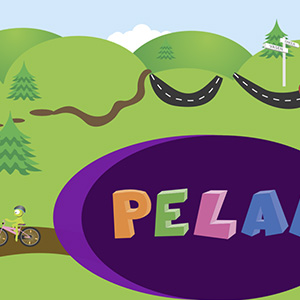

SusiSelainpohjainen sovellus paikkatietoihin perustuvien näyttelyiden esittämiseen suurilla kosketusnäytöillä sekä erillinen helppokäyttöinen hallintatyökalu esitysten rakentamiseen, jolla työntekijät voivat itse koostaa esityksiä. Tehty yhteistyössä pääkaupunkiseudun museoiden kanssa.

Lapsi Liikenteessä Liikenneturvalle suunniteltu & tehty selainpohjainen canvas-peli, jonka tarkoitus oli opettaa lapsille käyttäytymistä liikenteessä, kohderyhmänä olivat alle kouluikäiset lapset.
Lapsi liikenteessä
2013
Metropolian application development project-kurssin yhteydessä tehty pelisovellus Liikenneturvalle
Pelin tarkoitus on opettaa alle kouluikäisille lapsille liikennekäyttäytymistä, peli toimii selainpohjaisesti useimmilla kosketusnäyttöisillä laitteilla. Pelissä lapsi pukee hahmon päälle varusteita ja kokoaa erilaisia palapelejä, ikäänkuin matkalla kouluun
Peliprojektin varsinainen tuote on pelin moottori, joka mahdollistaa vastaavankaltaisten pelien & palapelien tuottamisen nopeasti ilman erillistä ohjelmointia.
PäänäkymäEräs palapeliskenaarioista
ReaderKosketusnäyttöisille laitteille tehty rss-lehdenluku-sovellus
Reader
2013
Metropolian eReading-projektissa tehty rss-lehdenlukija.
Tavallisesta hieman poikkeava responsiivinen selainkäyttöinen lehdenlukijasovellus kosketusnäyttölaitteille, erityisesti tablet-tietokoneille.
PäävalikkoArtikkelilistausta
KyyläKerätyn käyttäjätiedon analysointi, uuden sisällön suosittelu käyttäjän lukemien artikkelien ja aiheiden perusteella
Kyyla
2013
Metropolian eReading-projektissa tehty käyttäjädataa analysoiva suosittelumoottori.
Kyylä pyrkii suosittelemaan käyttäjälle uutta luettavaa sisältöä aiempien lukutottumusten mukaan. Tuloksiin vaikuttavat käytetty lukuaika, lukukerrat, artikkeleista poimitut avainsanat, lehden päivittäisen sisällön jakautumiseen suhteutettuna. Tulokset näytetään yksinkertaisesti värikoodattuina palkkeina, kutakin kategoriaa vastaa tietty väri jolloin esitystilanteessa sovellusta on helppo käyttää.
Kyylä on ensisijaisesti demo-käyttöön suunniteltu sovellus, ja sitä on käytetty pääasiassa esitellessä ereading-projektin toimintaa
Koulutyönä suunniteltu ja valmistettu esite, tässä tapauksessa teemana jauheliha.
EtusivuSisältösivuSisällysluettelo
NetventumYrityksen käyntikorttien, esitteiden ja henkilökorttien suunnittelu.
Netventum
2010
Netventum OY:lle suuunnitellut graafiset tuotteet, käyntikortti, henkilökortti sekä suuri banneritausta johon asiakas pystyi itse lisäämään tekstiä
Oranki ei liittynyt aiheeseen
Plain Viking ProjectKoulutyönä tehty portfolio tuotteen suunnitteluprosessista.
Portfolio
2006
Koulutyönä tehty pdf-portfolio tuotteen valmistusprosessista
PöytäKoulutyönä tehty matala olohuoneen pöytä. Runko taivutettua massiivikoivua, päällystetty vanerilla ja tuettu alumiinirimoilla.
Pöytä
2006
Koulutyönä valmistettu matala olohuoneen pöytä. Runkomateriaalina taivutettu massiivikoivu, jonka väliin taivutettu vaneria pinnoiksi. Päällystetty keinonahalla ja koristeltu alumiinilistoilla.
VedinKaksi puista vedintä. Veistetty massiivipuusta, puulajeina pyökki ja tammi.
Vedin
2004
Koulutyönä massiivipuusta veistetyt vetimet
Vasemmalla tammea, oikeanpuoleinen pyökkiä.Vedin pyökistä